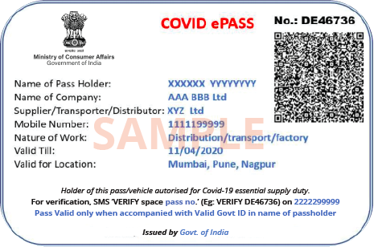

As the number of Covid-19 related fatalities continue to rise, several state governments are busy preparing a blueprint to impose fresh lockdown restrictions in worst hit areas. The Union government in a fresh advisory to the state governments has sought strict monitoring along with imposing movement restrictions to deter the spreading of the pandemic.
 ×The move is in line with the demand from stranded migrant workers who have faced difficulty to cross various state borders. The new set of ePasses will facilitate easy movement for those in unavoidable circumstances.
Meanwhile, the movement restrictions in the containment zone will remain suspended and people found travelling without proper documents are likely to face stiff penalties.
While lifting the intra-state travel curbs in Covid-19 orange and green zones, the Union government has also widened the ambit of E-Passes and has asked the state governments to issue E-Passes to those stranded. This will be further to those engaged in emergency services in Covid-19 zones.
As per government sources the idea behind the move is to address several harassment complaints by domestic help, stranded migrants and workers in the areas that are safe but face tough lockdown norms endangering their livelihood.
sThe Union Ministry of Home Affairs has also given the state governments to frame their own guidelines while preparing a plan to open Covid-19 orange and green zones. The state governments will furter decide about red, orange and green zones. The Union government has, however, clarified that stiff restrictions will continue in areas marked as Covid-19 red and containment zones. The Centre is likely to share a common ePass template and guidelines for issuing these ePasses online with each state to make the process swift and hassle free.